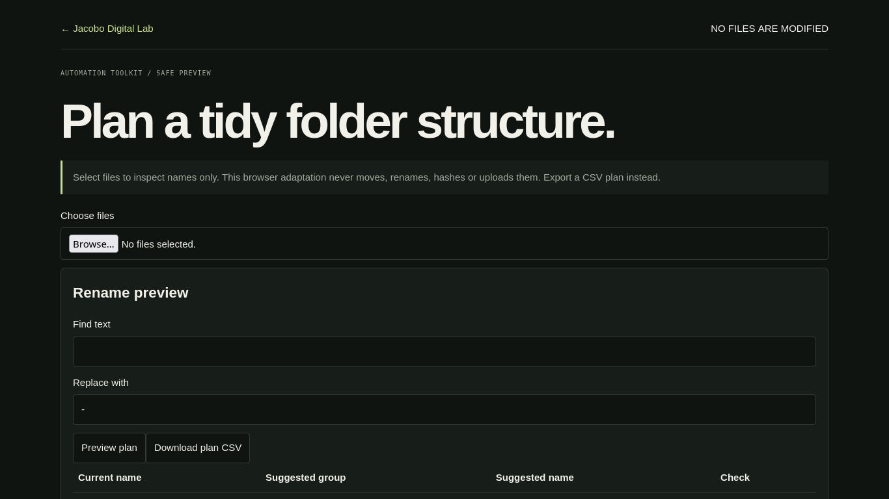

PROJECT CASE STUDY
Automation Toolkit
Preview a safe file-operation plan
Load file names from a local folder selection, inspect extension groups and download a proposed organization plan. No files are moved or renamed.

Open live demo ↗01 / PROBLEM
Problem: make repetitive file operations reviewable.
02 / OBJECTIVE
Objective: preview organization, rename and duplicate-report ideas.
03 / SOLUTION
Solution: safe browser preview of the CLI’s file-operation workflow.
04 / ARCHITECTURE
Architecture: static browser code and selected-file metadata only.
05 / IMPLEMENTATION
Implementation: extension grouping, regex rename preview with validation, and plan CSV export.
06 / TESTING
Testing: filename edge cases, extensionless names and collision warnings.
07 / LIMITATIONS & ROADMAP
Limitations & roadmap: browser cannot mutate the local filesystem here; preview only, no deletion or move.
08 / ACCESS
Access: demo, source repository and technical notes.